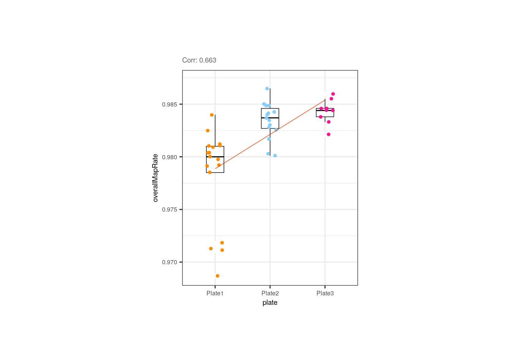
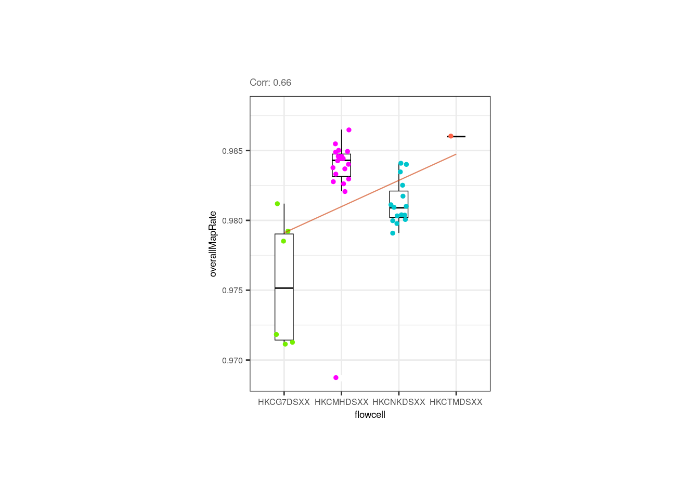

12 DE model building with variancePartition
Instructor: Daianna
12.1 Download the smokingMouse data and subset it
We’ve used these commands already in an earlier chapters.
## Load the container package for this type of data
library("SummarizedExperiment")
## Download data
library("BiocFileCache")
bfc <- BiocFileCache::BiocFileCache()
cached_rse_gene <- BiocFileCache::bfcrpath(
x = bfc,
"https://github.com/LieberInstitute/SPEAQeasyWorkshop2023/raw/devel/provisional_data/rse_gene_mouse_RNAseq_nic-smo.Rdata"
)
## Check the local path on our cache
cached_rse_gene
#> BFC2
#> "/github/home/.cache/R/BiocFileCache/42e6d72b61f_rse_gene_mouse_RNAseq_nic-smo.Rdata"
## Load the rse_gene object
load(cached_rse_gene, verbose = TRUE)
#> Loading objects:
#> rse_gene
## Nicotine data
rse_gene_nic <- rse_gene[, which(rse_gene$Expt == "Nicotine")]
## Retain genes that passed filtering step
rse_gene_filt <- rse_gene_nic[rowData(rse_gene_nic)$retained_after_feature_filtering == TRUE, ]
## Separate data by Age
rse_gene_pups <- rse_gene_filt[, which(rse_gene_filt$Age == "Pup")]
rse_gene_adults <- rse_gene_filt[, which(rse_gene_filt$Age == "Adult")]
library("scuttle")
## Filter adult samples
outliers_library_size <- isOutlier(rse_gene_adults$sum, nmads = 3, type = "lower")
outliers_detected_num <- isOutlier(rse_gene_adults$detected, nmads = 3, type = "lower")
outliers_totalAssignedGene <- isOutlier(rse_gene_adults$totalAssignedGene, nmads = 3, type = "lower")
outliers_mito <- isOutlier(rse_gene_adults$mitoRate, nmads = 3, type = "higher")
outliers_rRNArate <- isOutlier(rse_gene_adults$rRNA_rate, nmads = 3, type = "higher")
not_outliers <- which(!(outliers_library_size | outliers_detected_num | outliers_totalAssignedGene | outliers_mito | outliers_rRNArate))
rse_gene_adults_qc <- rse_gene_adults[, not_outliers]
## Filter pup samples
outliers_library_size <- isOutlier(rse_gene_pups$sum, nmads = 3, type = "lower")
outliers_detected_num <- isOutlier(rse_gene_pups$detected, nmads = 3, type = "lower")
outliers_totalAssignedGene <- isOutlier(rse_gene_pups$totalAssignedGene, nmads = 3, type = "lower")
outliers_mito <- isOutlier(rse_gene_pups$mitoRate, nmads = 3, type = "higher")
outliers_rRNArate <- isOutlier(rse_gene_pups$rRNA_rate, nmads = 3, type = "higher")
not_outliers <- which(!(outliers_library_size | outliers_detected_num | outliers_totalAssignedGene | outliers_mito | outliers_rRNArate))
rse_gene_pups_qc <- rse_gene_pups[, not_outliers]12.2 Explore gene-level effects
Once the quality and the variability of the samples have been evaluated, the next step is to explore the differences in the expression of the genes themselves in the sample groups, or in other words, to quantify the contribution of the multiple sample variables of the study in the gene expression variation, which constitutes one of the fundamental challenges when analyzing complex RNA-seq datasets [1].
To determine which variables are the major drivers of expression variability, and importantly to define if the technical variability of RNA-seq data is low enough to study nicotine effects, we can implement an analysis of variance partition. variancePartition is a package that decomposes for each gene the expression variation into fractions of variance explained (FVE) by the sample variables of the experimental design of high-throughput genomics studies [1].
12.3 Variance Partition Analysis
12.3.1 Canonical Correlation Analysis
Before the analysis itself, we need to measure the correlation between the sample variables. This is an important step because highly correlated variables can produce unstable estimates of the variance fractions and hinder the identification of the variables that really contribute to the expression variation. There are at least two problems with that:
- If two variables are correlated, we could incorrectly determine that one of them contributes to gene expression changes when in reality it was just correlated with a real contributory variable.
- The part of variance explained by a biologically relevant variable can be reduced by the apparent contributions of correlated variables, if for example, they contain very similar information.
Additionally, the analysis is better performed with simpler models, specially when we have a limited number of samples in the study.
Hence, to drop such variables we must identify them first. Pearson correlation can be used for comparing continuous variables but the models can contain categorical variables as well, so in order to obtain the correlation between a continuous and a categorical variable, or between two categorical variables, we will perform a Canonical Correlation Analysis (CCA) with canCorPairs() that assesses the degree to which the variables co-vary and contain the same information. This function returns rho / sum(rho), the fraction of the maximum possible correlation. Note that CCA returns correlations values between 0 and 1 [2].
library("variancePartition")
library("pheatmap")
####################### Variance Partition Analysis #######################
## Fraction of variation attributable to each variable after correcting for all other variables
## 1. Canonical Correlation Analysis (CCA)
## Asses the correlation between each pair of sample variables
## Plot heatmap of correlations
plot_CCA <- function(age) {
## Data
rse_gene <- eval(parse_expr(paste0("rse_gene_", age, "_qc")))
## Define variables to examine: remove those with single values
## For adults: all are females (so we drop 'Sex' variable)
if (age == "adults") {
formula <- ~ Group + Pregnancy + plate + flowcell + mitoRate + overallMapRate + totalAssignedGene + rRNA_rate + sum + detected + ERCCsumLogErr
}
## For pups: none is pregnant (so the 'Pregnancy' variable is not considered)
else {
formula <- ~ Group + Sex + plate + flowcell + mitoRate + overallMapRate + totalAssignedGene + rRNA_rate + sum + detected + ERCCsumLogErr
}
## Measure correlations
C <- canCorPairs(formula, colData(rse_gene))
## Heatmap
pheatmap(
C, ## data
color = hcl.colors(50, "YlOrRd", rev = TRUE), ## color scale
fontsize = 8, ## text size
border_color = "black", ## border color for heatmap cells
cellwidth = unit(0.4, "cm"), ## height of cells
cellheight = unit(0.4, "cm") ## width of cells
)
return(C)
}As you can see, and in agreement to what we observed in the previous correlation plots, for adults there’s a strong correlation between mitoRate and totalAssignedGene ; we already know it’s a negative correlation. There’s also a strong correlation between plate and flowcell and between plate and overallMapRate .
## Heatmap for adult samples
CCA_adults <- plot_CCA("adults")
In pups overallMapRate has a relationship with rRNA_rate , plate and flowcell .
## Heatmap for pup samples
CCA_pups <- plot_CCA("pups")Importantly, in both groups of age Group is not highly correlated with any other variable. This is desirable because if this variable, the one that separates experimental and control samples, were correlated with another, then its individual contribution to gene expression changes would be diminished, affecting the results of the differential expression analysis: we would obtain gene differences driven by other variables rather than Group . Also, sum and detected are correlated.
Let’s explore why these variables are correlated in the following plots.
library("ggplot2")
library("rlang")
## 1.1 Barplots/Boxplots/Scatterplots for each pair of correlated variables
corr_plots <- function(age, sample_var1, sample_var2, sample_color) {
## Data
rse_gene <- eval(parse_expr(paste("rse_gene", age, "qc", sep = "_")))
CCA <- eval(parse_expr(paste0("CCA_", age)))
## Sample color by one variable
colors <- list(
"Group" = c("Control" = "brown2", "Experimental" = "deepskyblue3"),
"Age" = c("Adult" = "slateblue3", "Pup" = "yellow3"),
"Sex" = c("F" = "hotpink1", "M" = "dodgerblue"),
"Pregnancy" = c("Yes" = "darkorchid3", "No" = "darkolivegreen4"),
"plate" = c("Plate1" = "darkorange", "Plate2" = "lightskyblue", "Plate3" = "deeppink1"),
"flowcell" = c(
"HKCG7DSXX" = "chartreuse2", "HKCMHDSXX" = "magenta", "HKCNKDSXX" = "turquoise3",
"HKCTMDSXX" = "tomato"
)
)
data <- colData(rse_gene)
## Barplots for categorical variable vs categorical variable
if (class(data[, sample_var1]) == "character" & class(data[, sample_var2]) == "character") {
## y-axis label
if (sample_var2 == "Pregnancy") {
y_label <- paste("Number of samples from each ", sample_var2, " group", sep = "")
} else {
y_label <- paste("Number of samples from each ", sample_var2, sep = "")
}
# Stacked barplot with counts for 2nd variable
plot <- ggplot(data = as.data.frame(data), aes(
x = !!rlang::sym(sample_var1),
fill = !!rlang::sym(sample_var2)
)) +
geom_bar(position = "stack") +
## Colors by 2nd variable
scale_fill_manual(values = colors[[sample_var2]]) +
## Show sample counts on stacked bars
geom_text(aes(label = after_stat(count)),
stat = "count",
position = position_stack(vjust = 0.5), colour = "gray20", size = 3
) +
theme_bw() +
labs(
subtitle = paste0("Corr: ", signif(CCA[sample_var1, sample_var2], digits = 3)),
y = y_label
) +
theme(
axis.title = element_text(size = (7)),
axis.text = element_text(size = (6)),
plot.subtitle = element_text(size = 7, color = "gray40"),
legend.text = element_text(size = 6),
legend.title = element_text(size = 7)
)
}
## Boxplots for categorical variable vs continuous variable
else if (class(data[, sample_var1]) == "character" & class(data[, sample_var2]) == "numeric") {
plot <- ggplot(data = as.data.frame(data), mapping = aes(
x = !!rlang::sym(sample_var1),
y = !!rlang::sym(sample_var2),
color = !!rlang::sym(sample_var1)
)) +
geom_boxplot(size = 0.25, width = 0.32, color = "black", outlier.color = "#FFFFFFFF") +
geom_jitter(width = 0.15, alpha = 1, size = 1) +
stat_smooth(geom = "line", alpha = 0.6, size = 0.4, span = 0.3, method = lm, aes(group = 1), color = "orangered3") +
scale_color_manual(values = colors[[sample_var1]]) +
theme_bw() +
guides(color = "none") +
labs(
subtitle = paste0("Corr: ", signif(CCA[sample_var1, sample_var2], digits = 3)), y = gsub("_", " ", sample_var2),
x = sample_var1
) +
theme(
axis.title = element_text(size = (7)),
axis.text = element_text(size = (6)),
plot.subtitle = element_text(size = 7, color = "gray40"),
legend.text = element_text(size = 6),
legend.title = element_text(size = 7)
)
}
## Scatterplots for continuous variable vs continuous variable
else if (class(data[, sample_var1]) == "numeric" & class(data[, sample_var2]) == "numeric") {
plot <- ggplot(as.data.frame(data), aes(
x = !!rlang::sym(sample_var1),
y = !!rlang::sym(sample_var2),
color = !!rlang::sym(sample_color)
)) +
geom_point(size = 2) +
stat_smooth(geom = "line", alpha = 0.4, size = 0.4, span = 0.25, method = lm, color = "orangered3") +
## Color by sample_color variale
scale_color_manual(name = sample_color, values = colors[[sample_color]]) +
theme_bw() +
labs(subtitle = paste0("Corr: ", signif(CCA[sample_var1, sample_var2], digits = 3)), y = gsub("_", " ", sample_var2), x = gsub("_", " ", sample_var1)) +
theme(
axis.title = element_text(size = (7)),
axis.text = element_text(size = (6)),
plot.subtitle = element_text(size = 7, color = "gray40"),
legend.text = element_text(size = 6),
legend.title = element_text(size = 7)
)
}
return(plot)
}As shown above and as previously demonstrated, the mitochondrial rate and the fraction of reads that mapped to genes are negatively correlated in adults but control and experimental samples are evenly distributed.
## Correlation plot for adults
p <- corr_plots("adults", "mitoRate", "totalAssignedGene", "Group")
p + theme(plot.margin = unit(c(2, 4, 2, 4), "cm"))
Altought not expected, the flowcell and the plate of the adult samples were correlated, but that is due to the fact that all samples from the first flowcell (HKCG7DSXX) were in the 1st plate, and almost all samples from the second flowcell were in the 3rd plate.
p <- corr_plots("adults", "flowcell", "plate", NULL)
p + theme(plot.margin = unit(c(1.5, 4.5, 1.5, 4.5), "cm"))Plate was also slightly correlated with the overall mapping rate, but if we look closely, the trend is given by the plate 1 samples that have lower rates; the rates of samples from the 2nd and 3rd plates are similar.
p <- corr_plots("adults", "plate", "overallMapRate", NULL)
p + theme(plot.margin = unit(c(2, 5.3, 2, 5.3), "cm"))We also appreciated and described already that the library size and the number of detected of genes are correlated in pups and adults. Note however that in pups control samples have bigger numbers of expressed genes.
## Correlation plots
p <- corr_plots("adults", "sum", "detected", "Group")
p + theme(plot.margin = unit(c(2, 4, 2, 4), "cm"))
p <- corr_plots("pups", "sum", "detected", "Group")
p + theme(plot.margin = unit(c(2, 4, 2, 4), "cm"))
In pups, the overall mapping rate was slightly and negatively correlated with the ribosomal rate, but again controls and experimental samples are equally distributed and the rRNA_rate is pretty small for all of them.
## ## Correlation plot for pups
p <- corr_plots("pups", "rRNA_rate", "overallMapRate", "Group")
p + theme(plot.margin = unit(c(2, 4, 2, 4), "cm"))
Overall mapping rate is also positively correlated with plate and flowcell, relationships mainly given by samples from the 1st plate with the lowest overallMapRate , most of which were also in the 1st flowcell.
p <- corr_plots("pups", "plate", "overallMapRate", NULL)
p + theme(plot.margin = unit(c(2, 5.3, 2, 5.3), "cm"))p <- corr_plots("pups", "flowcell", "overallMapRate", NULL)
p + theme(plot.margin = unit(c(2, 5.3, 2, 5.3), "cm"))
Now look at the following plots. Why is it important that experimental and control samples are distributed throughout all the plates and flowcells?
p1 <- corr_plots("adults", "Group", "plate", NULL)
p2 <- corr_plots("pups", "Group", "plate", NULL)
p3 <- corr_plots("adults", "Group", "flowcell", NULL)
p4 <- corr_plots("pups", "Group", "flowcell", NULL)
plots <- plot_grid(p1, p2, p3, p4, ncol = 2)
plots + theme(plot.margin = unit(c(1, 2.5, 1, 2.5), "cm"))
Hint: What would happen if all experimental samples were in one plate or flowcell and controls in another?
After identifying which variables are correlated and exploring the metrics of control and experimental samples the next step is to determine which of these variables must be removed. How do we discern which of the correlated variables to keep and which to drop? As recommended in the variancePartition user’s guide [2], initially we can fit a linear model for each gene taking all sample variables and then define which ones explain a higher percentage of variance in many genes. But first let’s review how variancePartition works.
12.3.2 Fit model and extract fraction of variance explained
Briefly, variancePartition fits a linear model for each gene separately and calcVarPart() computes the fraction of variance in gene expression that is explained by each variable of the study design, plus the residual variation. The effect of each variable is assessed while jointly accounting for all others [1].
Basically what it does is calculate the data variance given by each variable and that of the total model fit, summarizing the contribution of each variable in terms of the fraction of variation explained (FVE). Since it calculates the fraction of total variation attributable to each aspect of the study design, these fractions naturally sum to 1 [1].
variancePartition fits two types of models:
- Linear mixed model (LMM) where all categorical variables are modeled as random effects and all continuous variables are fixed effects. The function
lmer()fromlme4is used to fit this model.
## Fit LMM specifying the existence of random effects with '(1| )'
fit <- lmer(expr ~ a + b + (1|c), data=data)- Fixed effects model, which is basically the standard linear model (LM), where all variables are modeled as fixed effects. The function
lm()is used to fit this model.
## Fit LM modeling all variables as fixed effects
fit <- lm(expr ~ a + b + c, data=data)In our case, the function will be modeled a mixed model since we have both effects.
❓What are random and fixed effects? How to determine if a variable is one or the other? Categorical variables are usually modeled as random effects, i.e., traits such as the batch, sex, flowcell, plate, individual, variables ‘randomly chosen or selected from a population’ and whose specific levels are not of particular interest, only the grouping of the samples by those variables. These are control variables/factors that vary randomly across individuals or groups and we use them because we must control for these effects. Think of them as having different effects on gene expression (the dependent variable) depending on their values. Continuous variables must be modeled as fixed effects; they cannot be modeled as random effects. These correspond to variables that can be measured somehow and whose levels are themselves of interest (the QC metrics, for instance); these effects would be the same for all genes.
❓Why is this effect distinction important? Because when we have clustered data, like gene expression values grouped by sex, plate, etc. we are violating the relevant assumption of independence, making an incorrect inference when using a general linear model (GLM). If we have clustered data where the variables’ values have distinct effects on gene expression, we must work with an extension of GLM, with the linear mixed model (LMM) that contains a mix of both fixed and random effects [3].
Linear mixed model framework
👉🏼Source code of calcVarPart() here.
Once we understood what it computes, we can use variancePartition to quantify the FVE of each variable.
## 2. Fit model
## Fit a linear mixed model (LMM) that takes continuous variables as fixed effects and categorical variables as random effects
varPartAnalysis <- function(age, formula) {
RSE <- eval(parse_expr(paste("rse_gene", age, "qc", sep = "_")))
## Ignore genes with variance 0
genes_var_zero <- which(apply(assays(RSE)$logcounts, 1, var) == 0)
if (length(genes_var_zero) > 0) {
RSE <- RSE[-genes_var_zero, ]
}
## Loop over each gene to fit model and extract variance explained by each variable
varPart <- fitExtractVarPartModel(assays(RSE)$logcounts, formula, colData(RSE))
# Sort variables by median fraction of variance explained
vp <- sortCols(varPart)
p <- plotVarPart(vp)
return(list(p, vp))
}## Violin plots
##### Model with all variables #####
## Adults
## Define variables; random effects indicated with (1| )
formula <- ~ (1 | Group) + (1 | Pregnancy) + (1 | plate) + (1 | flowcell) + mitoRate + overallMapRate +
totalAssignedGene + rRNA_rate + sum + detected + ERCCsumLogErr
plot <- varPartAnalysis("adults", formula)[[1]]
plot + theme(
plot.margin = unit(c(1, 1, 1, 1), "cm"),
axis.text.x = element_text(size = (7)),
axis.text.y = element_text(size = (7.5))
)As presented above, in adults we can notice that totalAssignedGene has a larger mean FVE than mitoRate so we keep the former. Same reason to remove plate that is correlated with flowcell and with overallMapRate , and to drop sum that goes after detected .
##### Model without correlated variables #####
## Adult plots without mitoRate, plate and sum
formula <- ~ (1 | Group) + (1 | Pregnancy) + (1 | flowcell) + overallMapRate + totalAssignedGene + rRNA_rate + detected + ERCCsumLogErr
varPart <- varPartAnalysis("adults", formula)
varPart_data_adults <- varPart[[2]]
plot <- varPart[[1]]
plot + theme(
plot.margin = unit(c(1, 1, 1, 1), "cm"),
axis.text.x = element_text(size = (7)),
axis.text.y = element_text(size = (7.5))
)Notwithstanding, in this new reduced model Group contribution doesn’t increment much in comparison with the complete model and also note that the % of variance explained by the residuals, i.e., the % of gene expression variance that the model couldn’t explain, increments in this model compared to the previous; by removing independent variables to a regression equation, we can explain less of the variance of the dependent variable [3]. That’s the price to pay when dropping variables but it is convenient in this case since we don’t have many samples for the model to determine their real unique contributions.
In pups, based on the model with all variables, again sum must be removed, as well as rRNA_rate and plate that are correlated with overallMapRate .
##### Model with all variables #####
## Pups
formula <- ~ (1 | Group) + (1 | Sex) + (1 | plate) + (1 | flowcell) + mitoRate + overallMapRate +
totalAssignedGene + rRNA_rate + sum + detected + ERCCsumLogErr
plot <- varPartAnalysis("pups", formula)[[1]]
plot + theme(
plot.margin = unit(c(1, 1, 1, 1), "cm"),
axis.text.x = element_text(size = (7)),
axis.text.y = element_text(size = (7.5))
)Without correlated variables, Group’s contribution increases but so does the residual source.
##### Model without correlated variables #####
## Pup plots without sum, rRNA_rate and plate
formula <- ~ (1 | Group) + (1 | Sex) + (1 | flowcell) + mitoRate + overallMapRate + totalAssignedGene + detected + ERCCsumLogErr
varPart <- varPartAnalysis("pups", formula)
varPart_data_pups <- varPart[[2]]
plot <- varPart[[1]]
plot + theme(
plot.margin = unit(c(1, 1, 1, 1), "cm"),
axis.text.x = element_text(size = (7)),
axis.text.y = element_text(size = (7.5))
)But what does it mean that a variable explains a high percentage of the expression variation of a gene? Look at the following plots and try the function with other variables to observe the relationships that exists between the gene expression values in the samples and samples’ variables.
12.3.3 Examine expression of most affected genes by each sample variable
In the following plots you can appreciate the expression values in the samples of the most affected genes by a certain variable (i.e., the genes for which the variable explains the highest percentages of variance) vs. the values of the samples for the same variable. In simple words, each dot is a sample, in the y-axis the expression of the gene in each sample and in the x-axis the samples’ values for the variable. The idea is to observe the strong relationships that exists for the sample variables and the gene expression of such affected genes, which ends up causing the variables to explain high percentages of gene expression variation and which obligate us to adjust for them the models of DEA so that we don´t get DEGs driven by sample quality differences.
## Plot of gene expression lognorm counts vs. sample variable
plot_gene_expr <- function(age, sample_var, gene_id) {
rse_gene <- eval(parse_expr(paste("rse_gene", age, "qc", sep = "_")))
varPart_data <- eval(parse_expr(paste0("varPart_data_", age)))
colors <- list(
"Group" = c("Control" = "brown2", "Experimental" = "deepskyblue3"),
"Age" = c("Adult" = "slateblue3", "Pup" = "yellow3"),
"Sex" = c("F" = "hotpink1", "M" = "dodgerblue"),
"Pregnancy" = c("Yes" = "darkorchid3", "No" = "darkolivegreen4"),
"plate" = c("Plate1" = "darkorange", "Plate2" = "lightskyblue", "Plate3" = "deeppink1"),
"flowcell" = c(
"HKCG7DSXX" = "chartreuse2", "HKCMHDSXX" = "magenta", "HKCNKDSXX" = "turquoise3",
"HKCTMDSXX" = "tomato"
)
)
## Lognorm counts of the gene across samples
data <- colData(rse_gene)
data$gene_expr <- assays(rse_gene)$logcounts[gene_id, ]
## Percentage of variance explained by the variable
percentage <- 100 * signif(varPart_data[gene_id, sample_var], digits = 3)
## Boxplots for discrete variables
if (class(data[, sample_var]) == "character") {
plot <- ggplot(data = as.data.frame(data), mapping = aes(
x = !!rlang::sym(sample_var),
y = gene_expr, color = !!rlang::sym(sample_var)
)) +
geom_boxplot(size = 0.25, width = 0.32, color = "black", outlier.color = "#FFFFFFFF") +
geom_jitter(width = 0.15, alpha = 1, size = 1) +
stat_smooth(geom = "line", alpha = 0.6, size = 0.4, span = 0.3, method = lm, aes(group = 1), color = "orangered3") +
scale_color_manual(values = colors[[sample_var]]) +
theme_bw() +
guides(color = "none") +
labs(
title = gene_id,
subtitle = paste0("Variance explained: ", percentage, "%"),
y = "lognorm counts", x = sample_var
) +
theme(
axis.title = element_text(size = (7)),
axis.text = element_text(size = (6)),
plot.title = element_text(hjust = 0.5, size = 7.5, face = "bold"),
plot.subtitle = element_text(size = 7, color = "gray40"),
legend.text = element_text(size = 6),
legend.title = element_text(size = 7)
)
}
## Scatterplots for continuous variables
else {
colors <- c(
"mitoRate" = "khaki3", "overallMapRate" = "turquoise", "totalAssignedGene" = "plum2", "rRNA_rate" = "orange3",
"sum" = "palegreen3", "detected" = "skyblue2", "ERCCsumLogErr" = "slateblue1"
)
plot <- ggplot(as.data.frame(data), aes(x = eval(parse_expr(sample_var)), y = gene_expr)) +
geom_point(color = colors[[sample_var]], size = 2) +
stat_smooth(geom = "line", alpha = 0.4, size = 0.4, span = 0.25, method = lm, color = "orangered3") +
theme_bw() +
guides(color = "none") +
labs(
title = gene_id,
subtitle = paste0("Variance explained: ", percentage, "%"),
y = "lognorm counts", x = gsub("_", " ", sample_var)
) +
theme(
plot.margin = unit(c(0.4, 0.1, 0.4, 0.1), "cm"),
axis.title = element_text(size = (7)),
axis.text = element_text(size = (6)),
plot.title = element_text(hjust = 0.5, size = 7.5, face = "bold"),
plot.subtitle = element_text(size = 7, color = "gray40"),
legend.text = element_text(size = 6),
legend.title = element_text(size = 7)
)
}
return(plot)
}## Function to plot gene expression vs sample variable data for top 3 most affected genes
plot_gene_expr_sample <- function(age, sample_var) {
rse_gene <- eval(parse_expr(paste("rse_gene", age, "qc", sep = "_")))
varPart_data <- eval(parse_expr(paste0("varPart_data_", age)))
## Top 3 genes most affected by sample variable
affected_genes <- rownames(varPart_data[order(varPart_data[, "Group"], decreasing = TRUE), ][1:3, ])
## Plots
plots <- list()
for (i in 1:length(affected_genes)) {
plots[[i]] <- plot_gene_expr(age, sample_var, affected_genes[i])
}
plot_grid(plots[[1]], plots[[2]], plots[[3]], ncol = 3)
}## Adults
## Plots for top affected genes by 'totalAssignedGene'
plots <- plot_gene_expr_sample("adults", "totalAssignedGene")
plots + theme(plot.margin = unit(c(3, 1, 2, 3), "cm"))
## Plots for top affected genes by 'overallMapRate'
plots <- plot_gene_expr_sample("adults", "overallMapRate")
plots + theme(plot.margin = unit(c(3, 1, 2, 3), "cm"))
## Plots for top affected genes by 'Group'
plots <- plot_gene_expr_sample("adults", "Group")
plots + theme(plot.margin = unit(c(3, 1, 2, 3), "cm"))## Pups
## Plots for top affected genes by 'overallMapRate'
plots <- plot_gene_expr_sample("pups", "overallMapRate")
plots + theme(plot.margin = unit(c(3, 1, 2, 3), "cm"))
## Plots for top affected genes by 'totalAssignedGene'
plots <- plot_gene_expr_sample("pups", "totalAssignedGene")
plots + theme(plot.margin = unit(c(3, 1, 2, 3), "cm"))
## Plots for top affected genes by 'Group'
plots <- plot_gene_expr_sample("pups", "Group")
plots + theme(plot.margin = unit(c(3, 1, 2, 3), "cm"))📑 Exercise 1: What % of variance does Group explain for gene ENSMUSG00000042348.10 in pups? Create the boxplots for its counts in control and experimental samples. Is it more likely that the gene is upregulated or downregulated?
📑 Exercise 2: Do the same for gene ENSMUSG00000064372.1. What do you observe in terms of variance percentage and sample differences?
References
Hoffman, G. E., & Schadt, E. E. (2016). variancePartition: interpreting drivers of variation in complex gene expression studies.BMC bioinformatics, 17(1), 1-13.
Hoffman, G. (2022). variancePartition: Quantifying and interpreting drivers of variation in multilevel gene expression experiments.
van den Berg, S. M. (2022). Analysing data using linear models. Web site: https://bookdown.org/pingapang9/linear_models_bookdown/